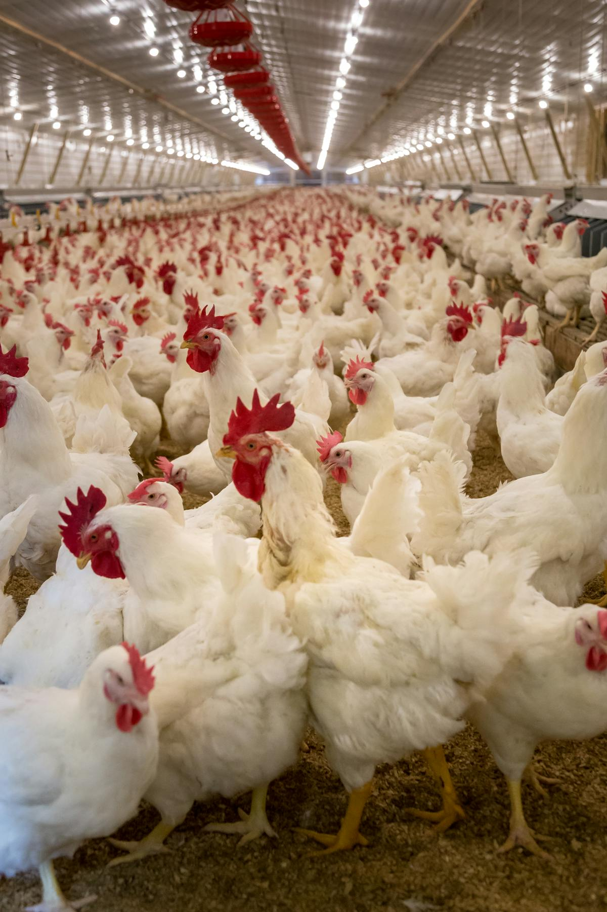

Farmer profiles, farm records, and structured onboarding workflows.
Poultry Supply and Integration
Digital Operations
Utsav Feed Industries is strengthening its operating model through digital systems that connect farmers, field teams, feed movement, medicine support, batch records, and management reporting in one coordinated workflow.
Structured digital records for farms, sheds, and batch-linked activities.
Better coordination between field teams, company operations, and farms.
Visibility into feed, medicine, flock, and operational performance.

Digital Systems
These digital systems are shaped around actual operational workflows, helping the business move from manual coordination into a more controlled and scalable model.
Farmer profiles, farm records, and structured onboarding workflows.
Clear tracking for sheds, active batches, flock age, and placement cycles.
Better control over supply movement, stock records, and usage visibility.
Digital operational records supporting field discipline and faster review.
Mobile-ready workflows for visits, updates, farm coordination, and issue visibility.
Management reporting, review support, and stronger operational control over time.
Why It Matters
These systems strengthen coordination between the farm, the field team, and the management layer. That shift helps the business operate with more visibility, faster reporting, stronger records, and better execution discipline.
Clearer records across batches, feed movement, medicine, and field operations.
A shared system for teams and farms instead of fragmented communication.
Stronger oversight across supply, activity tracking, and performance reviews.
A business model ready to support larger networks and more disciplined expansion.